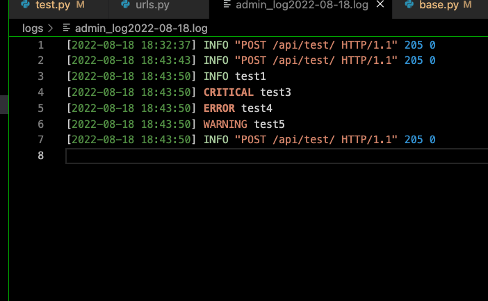

<meta charset="utf-8">
<html lang="ko">
<head>
    <link rel="stylesheet" type="text/css" href="./../style.css" />
    <title>[ Django ] Django logging 하기 - YEOL</title>
</head>
<body id="tt-body-page" class="">
<div id="wrap" class="wrap-right">
    <div id="container">
        <main class="main ">
            <div class="area-main">
                <div class="area-view">
                    <div class="article-header">
                        <div class="inner-article-header">
                            <div class="box-meta">
                                <h2 class="title-article">[ Django ] Django logging 하기 - YEOL</h2>
                                <div class="box-info">
                                    <p class="category">Python/django</p>
                                    <p class="date">2022-08-18 18:46:25</p>
                                </div>
                            </div>
                        </div>
                    </div>
                    <hr>
                    <div class="article-view">
                        <div class="contents_style">
                            <h4 data-ke-size="size20">?<span>&nbsp;</span><b>환경&nbsp;</b></h4>
<p data-ke-size="size16">Mac M1<br />Python 3.9.12<br />VsCode</p>
<h4 data-ke-size="size20">? <b>개요</b></h4>
<p data-ke-size="size16">Django에서 logs폴더를 만들어 기록을 남겨봅시다!</p>
<h4 data-ke-size="size20">?<span>&nbsp;</span><b>목차</b></h4>
<ul style="list-style-type: disc;" data-ke-list-type="disc">
<li>로깅에 필요한 설정</li>
<li>postman으로 테스트하기</li>
</ul>
<p data-ke-size="size16">&nbsp;</p>
<h2 data-ke-size="size26"><b>- 로깅에 필요한 설정</b></h2>
<p data-ke-size="size16"><span>djangoProject를 준비합니다. settings.py 에 해당 내용을 추가합니다.<br /></span></p>
<pre id="code_1660813384009" class="bash" data-ke-language="bash" data-ke-type="codeblock"><code># 로그 형식 추가
LOGGING = {
    'version': 1,
    'disable_existing_loggers': False,  # True일경우 이미 존재하는 로거들을 비활성화
    'filters': {
        'require_debug_false': {
            '()': 'django.utils.log.RequireDebugFalse',
        },
        'require_debug_true': {
            '()': 'django.utils.log.RequireDebugTrue',  # DEBUG가 True일 때 레코드를 전달합니다 뭔소린지
        },
    },
    # 로그텍스트 형식정의
    'formatters': {
        'formatNormal': {'format': '%(levelname)s %(message)s [%(name)s:%(lineno)s]'},
        'formatTime': {'format': '[%(asctime)s] %(levelname)s %(message)s', 'datefmt': "%Y-%m-%d %H:%M:%S"},
    },
    'handlers': {
        # 파일 저장방식
        'file': {
            'level': 'INFO',  # 설정한 레벨이상의 로그만 동작합니다.
            'class': 'logging.handlers.RotatingFileHandler',  # 파일처리 핸들러로 파일저장
            'filename': os.path.join(BASE_DIR.parent, "logs/admin_log"+datetime.datetime.now().strftime('%Y-%m-%d')+".log"),
            'encoding': 'UTF-8',  # 인코딩 깨지지 말라고
            'maxBytes': 1024 * 1024 * 5,  # 5 MB  /
            'backupCount': 5,
            'formatter': 'formatTime',
        },
        # 콘솔(터미널)에 출력
        'console': {
            'level': 'DEBUG',  # 설정한 레벨이상의 로그만 동작합니다.
            'class': 'logging.StreamHandler',  # stream으로 로깅출력
            'formatter': 'formatTime',
        },
    },
    # 설정한 레벨이상의 로그만 동작합니다.  DEBUG &lt; INFO &lt; WARNING &lt; ERROR &lt; CRITICAL
    'loggers': {
        # 종류
        'django.server': {
            'handlers': ['file', 'console'],
            'propagate': False,
            'level': 'DEBUG',  # 설정한 레벨이상의 로그만 동작합니다.
        },
        # 'django.server': {
        #     'handlers': ['file', 'console'],
        #     'propagate': False,
        #     'level': 'CRITICAL',
        # },
        # 'django.request': {
        #     'handlers': ['file', 'console'],
        #     'propagate': False,
        #     'level': 'DEBUG',
        # },

    },
}</code></pre>
<p data-ke-size="size16">이해하는데 도움이 되는 링크&nbsp;</p>
<p data-ke-size="size16">점프 투 장고:&nbsp;<a href="https://docs.python.org/ko/3/library/logging.handlers.html#logging.NullHandler" target="_blank" rel="noopener">https://docs.python.org/ko/3/library/logging.handlers.html#logging.NullHandler</a></p>
<p data-ke-size="size16">django: <a href="https://docs.djangoproject.com/en/4.0/topics/logging/#topic-logging-parts-filters" target="_blank" rel="noopener">https://docs.djangoproject.com/en/4.0/topics/logging/#topic-logging-parts-filters</a></p>
<pre id="code_1660815753531" class="bash" data-ke-language="bash" data-ke-type="codeblock"><code>import logging
logger = logging.getLogger('django.server')


 
    def testFunc(self, request, *args, **kwargs):
        try:
            print(__name__)
            url = 'http://localhost:8080/v2/quick/testt/'
            logger.info('test1')
            logger.debug('test2')
            logger.critical('test3')
            logger.error('test4')
            logger.warning('test5')
            print(request)
            return Response(status=status.HTTP_205_RESET_CONTENT)
        except Exception as e:
            return Response(status=status.HTTP_400_BAD_REQUEST)</code></pre>
<p data-ke-size="size16">&nbsp;</p>
<h2 data-ke-size="size26"><b>- PostMan으로 테스트하기</b></h2>
<p data-ke-size="size16">로그 세팅할 때 디렉터리 설정을 보고 본인이 원하는 위치에 logs 폴더를 만들어줍니다.</p>
<p data-ke-size="size16">그리고 실행하면 해당 로그가 나옵니다.</p>
<p><figure class="imageblock alignCenter" >
    <span data-lightbox="lightbox">
        
    </span>
    <figcaption></figcaption>
</figure></p>
<p data-ke-size="size16">&nbsp;</p>
<p data-ke-size="size16"><b><span style="background-color: #ffffff; color: #555555;">? 근거 있는 조언은 언제나 환영합니다</span><span style="background-color: #ffffff; color: #555555;">. 성실한 코딩</span><span style="background-color: #ffffff; color: #555555;"><span>&nbsp;</span>하세요.</span></b></p>
                        </div>
                        <br/>
                        <div class="tags">
                            
                        </div>
                    </div>
                </div>
            </div>
        </main>
    </div>
</div>
</body>
</html>
